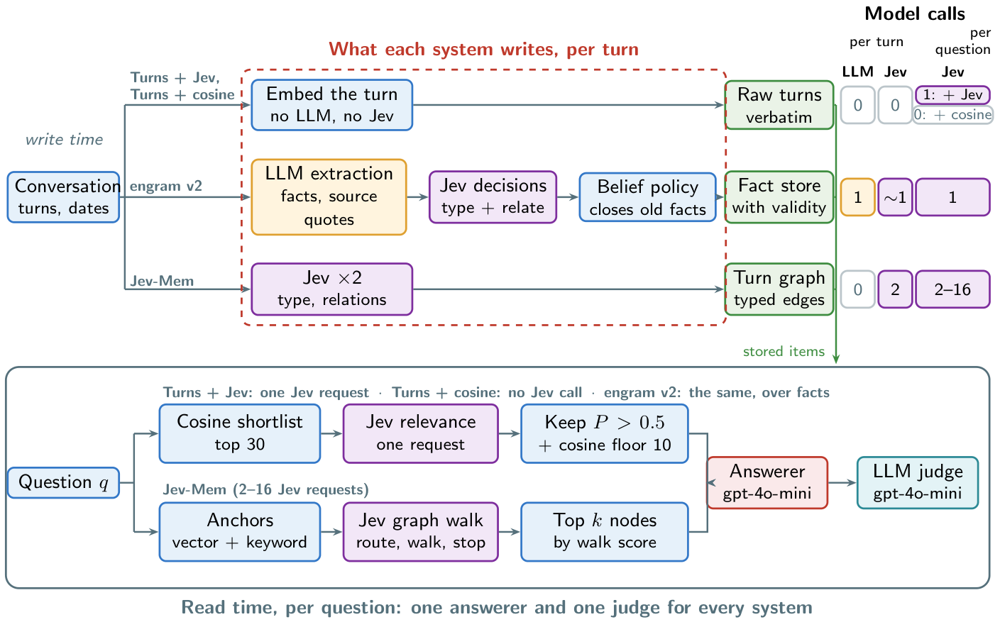
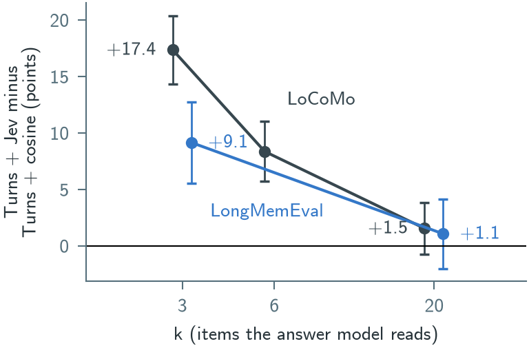

engram: when does selection replace extraction?
Does conversational memory need LLM-extracted facts, or is selecting the right raw turns enough?
Within our study, the context budget decides. When the answer model reads only a few retrieved items, selecting raw turns with one request to Jev, a typed decision model, is non-inferior to an LLM-extraction memory, at a fraction of the cost to write. When it reads many, extraction is more accurate. The study was pre-registered and run on conversations never used for development.
Results
- At a tight budget, raw turns are non-inferior to extraction (registered test H1, LoCoMo, 778 held-out questions). Turns + Jev scored 77.0% with 265 tokens per question; engram v2, an LLM-extraction memory, scored 77.5% with 251. The one-sided 95% bound on the difference is −3.0 points, against a −5-point margin.
- The result holds under checks. Blind human grading puts the difference at −1.7 to −2.6 points, still non-inferior. A second answer model (Llama 3.3 70B) gives a bound of −2.9.
- Raw turns cost 3,061× less to write: no LLM call per turn, only an embedding.
- The budget decides how much selection matters. Over cosine similarity, the Jev rerank adds 17.4 points on LoCoMo and 9.1 on LongMemEval when three of 30 candidates are read. At k=20 it adds 1.5 and 1.1.
- At generous budgets, extraction is more accurate. engram v2 at k=20 was the most accurate system measured (82.4%), ahead of Turns + Jev's ceiling (77.6%); descriptive, not token-matched.
- Jev is a fast selector. At matched context it is non-inferior to a gpt-4o-mini reranker (bound −2.0) at about a third of the latency, and more accurate than a multi-request Jev graph traversal.
- Reranking lowers correct abstention: 54.1% against 63.6% for cosine order at k=3.
The paper labels every result as registered, exploratory or post-hoc. That the budget also explains why published studies disagree is our interpretation, not a tested claim.


Papers
- Current: When Does Selection Replace Extraction? A Pre-Registered Test of Agent Memory with a Typed Decision Model (Rishabh Sharma, 2026). doi:10.5281/zenodo.22985242.
- Earlier: Typed Decisions in Agent Memory: Where They Help, Where They Don't, and What It Costs (Rishabh Sharma, 2026). doi:10.5281/zenodo.22948964 (all versions: doi:10.5281/zenodo.22941757). Read the v1 article, superseded in part as described below.
Pre-registrations. v3 plan doi:10.5281/zenodo.22970745 and its amendment doi:10.5281/zenodo.22977848. The v2 plan doi:10.5281/zenodo.22948854 was paused before any held-out run.
How the v1 article's claims stand
- Superseded: the case for extraction at a tight budget. v1 found that engram's lead over mem0 at matched context came entirely from its Jev reranker. v3 tests the reranker over raw turns, with no extraction, and finds it non-inferior to engram v2 at a tight budget. At that budget the extraction layer adds at most 4.7 points in the worst grading.
- Confirmed: reranking hurts abstention. v1 saw reranked engram abstain least on LoCoMo's adversarial questions; v3 finds reranking lowers correct abstention on both benchmarks.
- Not comparable: accuracy at k=20. v1 found engram and mem0 indistinguishable at k=20 with Claude models on four conversations. v3, with gpt-4o-mini on five new conversations, finds engram v2 ahead, descriptively. The stacks differ, so neither result revises the other.
- Not retested: closing stale facts. v1 found that closing stale facts did not change answers. v3 does not test it.
Data, code and reproduction
- Data: ris3abh-11/engram-eval, with per-question results for both papers.
- Code: github.com/ris3abh/Engram, release tag
paper-v3-preprint-r2. make reproduce-v3rebuilds every number, table and figure and the PDF from the committed results, with no model or API calls.
Citation
@misc{sharma2026selection,
author = {Sharma, Rishabh},
title = {When Does Selection Replace Extraction? A Pre-Registered Test of Agent Memory with a Typed Decision Model},
year = {2026},
publisher = {Zenodo},
doi = {10.5281/zenodo.22985242}
}